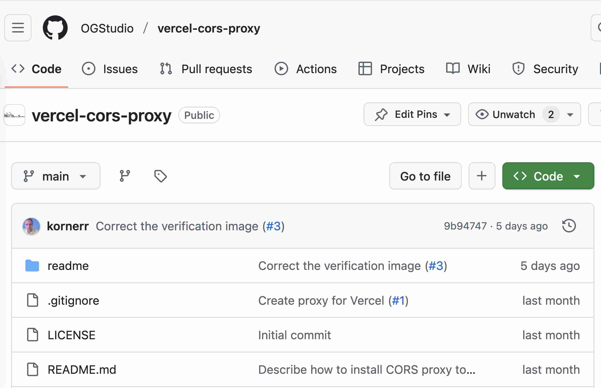

Новости
Редактирование файлов
2025-11-01
Октябрь
1. NPM
ПСКОВ теперь доступен в npm. Удобнее всего запускать через npx:
npx pskov --projectDir=/path/to/project
где /path/to/project надо заменить на путь до проекта
2. Вкладки Files, Edit, Render
У ПСКОВа теперь есть вкладки для разграничения выбора файла, его редактирования и просмотра результата конвертации Markdown (просмотр ещё не реализован). . .
Список файлов проекта
2025-10-02
Отображение файлов проекта
В сентябре сделал заготовку ПСКОВ 2 из двух частей: веб-клиент + веб-сервер:
- веб-сервер предоставляет доступ веб-клиенту к файлам на диске в формате Local Host Access
- веб-клиент предоставляет интерфейс человеку для работы с содержимым сайта
Логику написал на Kotlin. Из Kotlin получаю для Node.js и браузера код на JavaScript. Работа с Kotlin в качестве якорного языка. . .
Возврат к межплатформенным решениям
2025-09-03

Столкновение с ограничениями git push
В Августе я добавил команды git commit и git push к ПСКОВу.
Однако, выяснилось, что Vercel (на этом сервисе мы держим CORS proxy)
не пропускает запросы git push для довольного скромного по размерам
репозитория (50M) этого самого сайта. Vercel выдаёт ошибку 413 Content
too large.
Таким образом, поддержка git push для репозиториев нормального размера
требует от меня настройки и поддержки собственного сервера. На это
у меня сейчас нет ни средств, ни времени, к сожалению.. . .
Добавление, редактирование, сохранение, удаление файлов
2025-08-08

Новое
В июле я добавил в ПСКОВ 2 следующее:
| № | Описание | Демонстрация |
|---|---|---|
| 1 | Выбор ветки Git | |
| 2 | Подтягивание изменений в ветке Git | |
| 3 | Создание нового файла |
Заготовки компонент FS и Git
2025-07-01
Заготовки компонент
В июне сделал заготовки следующих компонент для ПСКОВа 2:
- FS: виртуальная файловая система на основе Lightning FS
- Git: работа с Git на основе Isomorphic-Git
Итого ПСКОВ 2 на текущий момент позволяет:
- склонировать хранилище Git
- посмотреть список файлов в хранилище
- очистить файловую систему и начать заново
Июль
В июле планирую добавить:
- отображение списка файлов не целиком, а лишь содержимое выбранной директории. . .
Редактор ПСКОВ 2 и компоненты
2025-06-03
Заготовка редактора ПСКОВ 2
В мае сделал заготовку редактора ПСКОВ 2, которая умеет лишь:
- показывать два пункта в левом меню
- отображать содержимое выбранного пункта меню
Функционально в этом сложно увидеть что-либо занимательное. Но таковое есть: и левое меню, и содержимое управляются компонентом, в данном случае WelcomeComponent. Будущая функциональность вроде Git. . .
Заметки и Git
2025-05-10 00:00
Заметки
В апреле сделал заготовку веб-приложения заметок.
Запланированы были следующие характеристики:
- данные хранятся в Git
- веб-приложение на архитектуре DoX
- данные синхрятся между несколькими клиентами: комп, мобила и т.д.
За апрель успел реализовать лишь первые два пункта, третий не успел. Без третьего пункта приложение в текущем виде практически бесполезно, поэтому. . .
ПСКОВ 2 без LHA?
2025-04-10 00:00

Оценка осуществимости ПСКОВа 2 без Local Host Access
ПСКОВ 2 и первоначальный ПСКОВ зависят от запущенного на компьютере Local Host Access для доступа к его локальной файловой системе с целью чтения файлов Markdown и записи файлов HTML.
В марте я оценивал, может ли Isomorphic-Git читать и писать в хранилище Git прямо из веб-браузера. Результат положительный. На самом деле, это уже вторая оценка Isomorphic-Git. Первая произошла в 2021-м году, но закончилась неудачно, т.к. для работы Isomorphic-Git с, например, GitHub нужен. . .
CLD: Генерация контекста
2025-03-11 00:00

Генерация контекста
В феврале доработал транслятор Межъязыкового диалекта (Cross-language dialect) (CLD) до генерации Контекста на основе описания в YML. Сгенерированные Контексты уже использованы в следующих проектах:
- CLD (транслятор CLD генерирует свой собственный Контекст)
- LHA
- PSKOV
Доселе я никогда прежде не тратил время на объяснение сути Контекста, поэтому сейчас самое время для очень краткого описания: Контекст очень близок к понятию Store в Redux. К сожалению, на этом месте пояснение заканчиваю,. . .
Страница 1 из 9